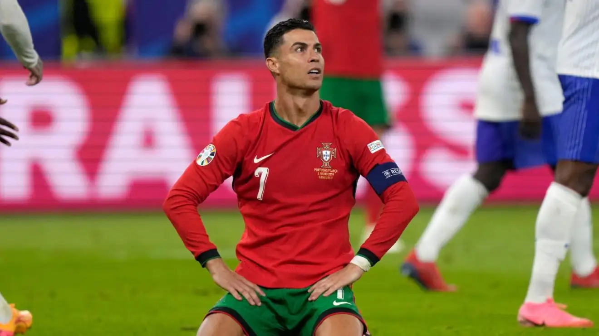

My Favorite car is Mercedes Benz E - Class W211
This car is from Mercedes Brand it was built in 2002 2003 but it is still lots of people favourite car beacuse it has lots of modifications
Football
Best Football Player
Association football, more commonly known as football or soccer,[a] is a team sport played between two teams of 11 players each, who primarily use their feet to propel a ball around a rectangular field called a pitch. The objective of the game is to score more goals than the opposing team by moving the ball beyond the goal line into a rectangular-framed goal defended by the opposing team. Traditionally, the game has been played over two 45-minute halves, for a total match time of 90 minutes. With an estimated 250 million players active in over 200 countries and territories, it is the world's most popular sport.